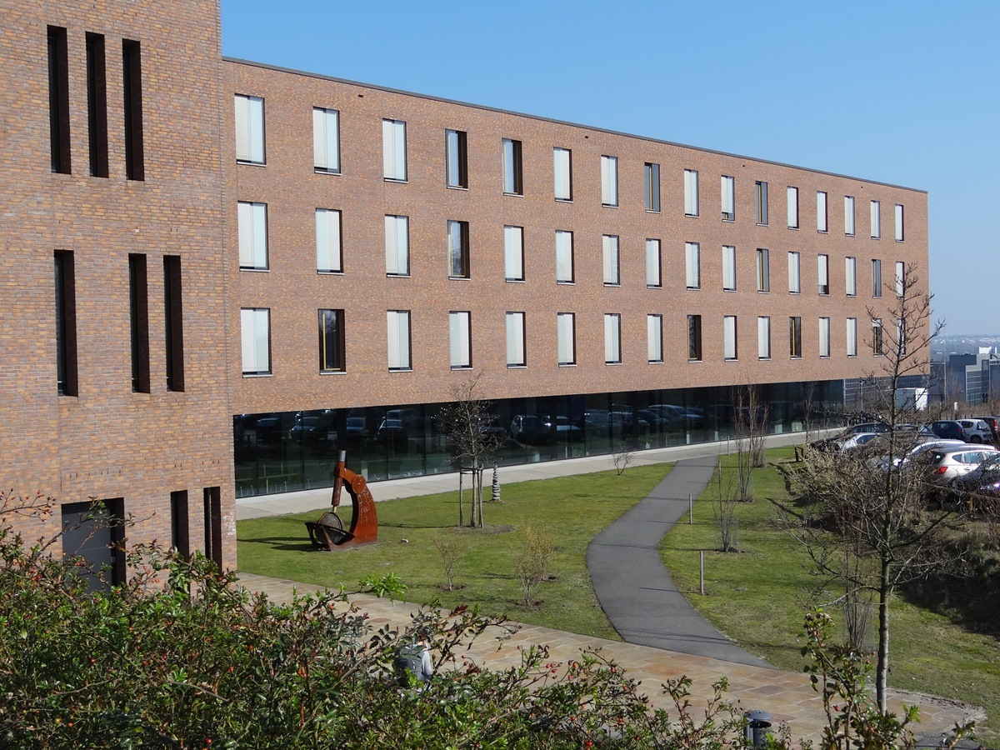
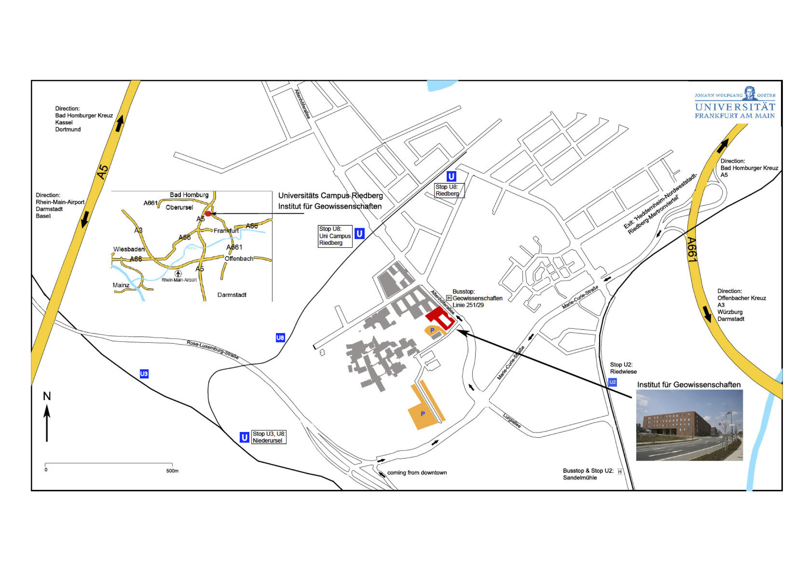

Venue
Address
Goethe-Universität Frankfurt
Campus Riedberg
Altenhöferallee 1
60438 Frankfurt am Main
www.geowissenschaften.uni-frankfurt.de

How to get there
Via public transport
Arriving at main train station (“Hauptbahnhof”)
- Take the “U-Bahn” U4 direction “Seckbacher Landstraße” or U5 direction “Preungesheim”. Get off directly at the next stop called “Willy Brandt-Platz”.
- Change to U8 direction “Riedberg” and step off on exit “Uni Campus Riedberg”.
- Form there you can walk in about 5 minutes along the “Alfred-Wegener-Straße” or along the “Altenhöferallee” to the “Geowissenschaften”-building. The main entrance is on the west side. Arriving at Frankfurt Airport (“Frankfurter Flughafen”)
- Take the “S-Bahn” S8 or S9 direction “Hanau Hauptbahnhof” until “Hauptwache”.
- Change to U8 direction “Riedberg” and step off on exit “Uni Campus Riedberg”.
- Form there you can walk in about 5 minutes along the “Alfred-Wegener-Straße” or along the “Altenhöferallee” to the “Geowissenschaften”-building. The main entrance is on the west side.
By car
The ”Institut für Geowissenschaften” is situated in the northwest of Frankfurt on the “Niederurseler Hang” between the “Autobahn 661” and freeway “Rosa-Luxemburg-Straße” (see map for more details).
- Leave the Autobahn 661 on exit ”Heddernheim-Nordweststadt-Riedberg-Mertonviertel”, drive along “Marie-Curie Straße” then turn right onto “Altenhöferallee”.
- Coming from A66 or Frankfurt city center: From the Autobahn exit “Frankfurt-Miquelallee”, drive towards “Nordweststadt-Eschersheim-Ginnheim” (“Rosa-Luxemburg-Straße”) until you reach the exit “Mertonviertel”. Drive along “Marie-Curie-Straße” then turn left onto “Altenhöferallee”.
- The “Geowissenschaften”-building is located directly on the corner (see photo).
- Find the parking area (highlighted in orange on site plan) near the institute. The main entrance is on the west side.
Map of the area
